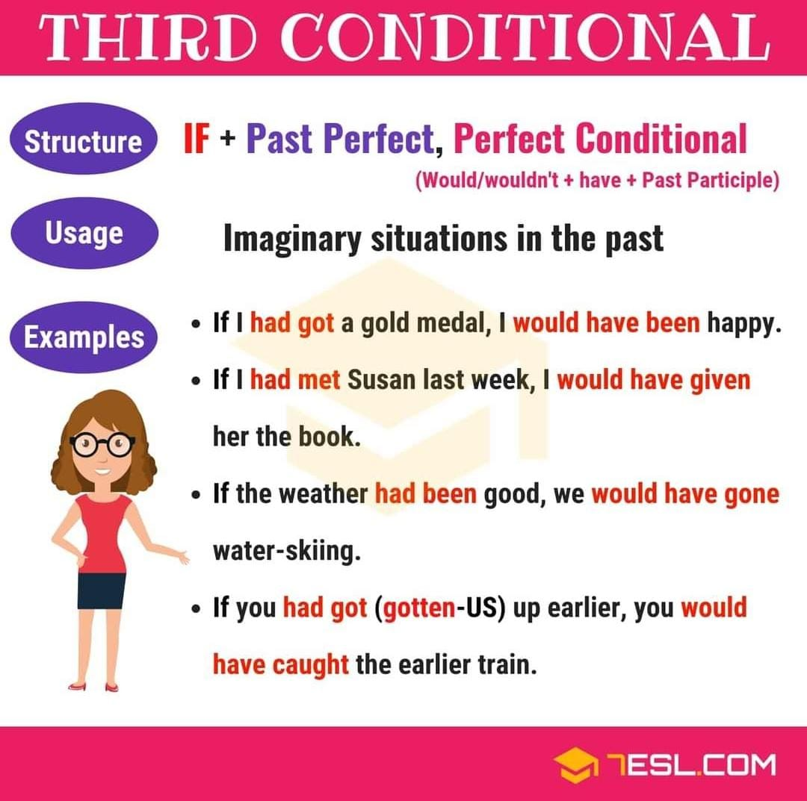

Explanation
Conditionals describe the result of a certain condition.
- The if clause tells you the condition (If you study hard)
- the main clause tells you the result (you will pass your exams).
- The order of the clauses does not change the meaning.
If you study hard, you will pass your exams.
will pass your exams if you study hard.
Third conditional
We use it to think in situations from the past that didn't happen and imagine the results of it.
To use participle verbs, we have to keep in mind if the verbs is regular (if it is, it's forms adding -ed at the end of the verb) or irregular ( in this case we use the third column in the list of irregular verbs. Sometimes, we can use modals like could or might:
- Would:If I had remembered it was your birthday, I would have bought you a present.
- COULD: If I had saved my money, I could have gone on holiday.
- MIGHT: If we had had time, we might have gone to the beach.
Another thing about the conditionals is that the order of the two sentences can change.
- If we start with the condition "if", we separe it with a coma.
- Otherwise if we start with the sentence that contains the result, we don't need to use the coma.
The structure is If + past perfect, person + would + have + verb in past participle.
